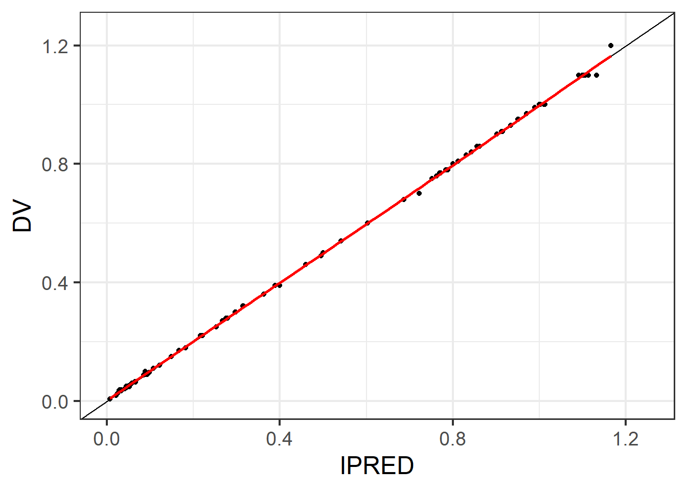
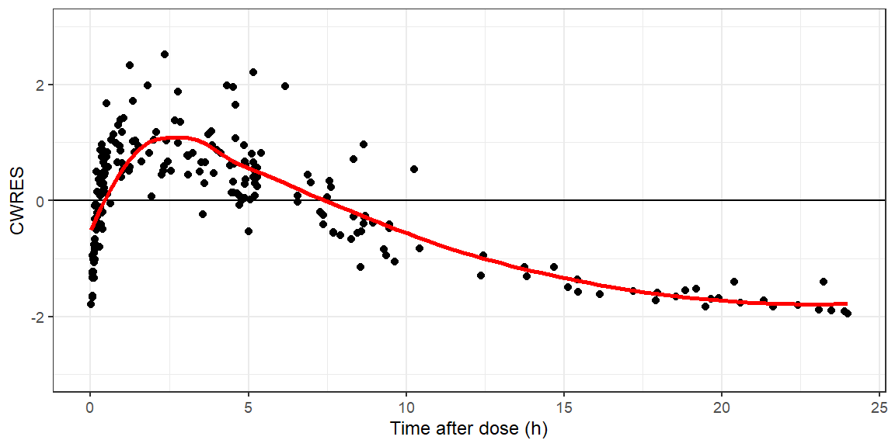
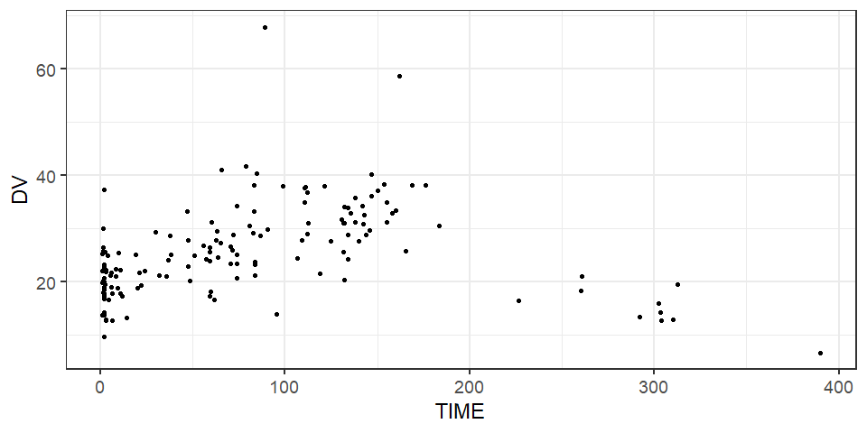
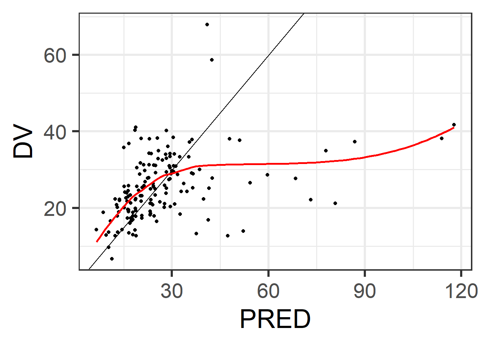
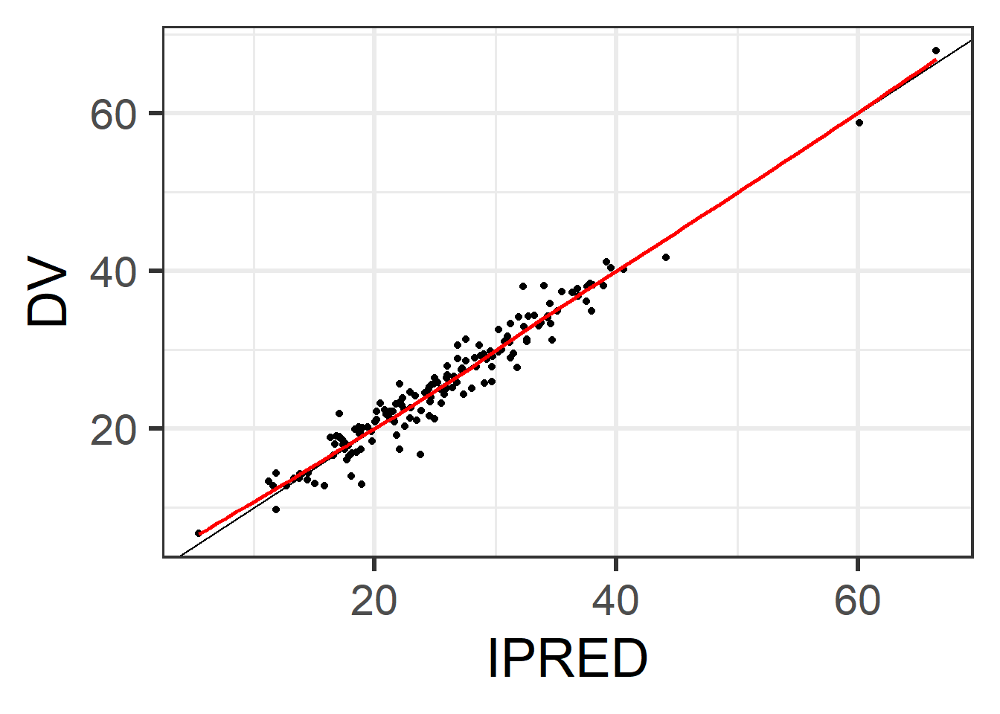
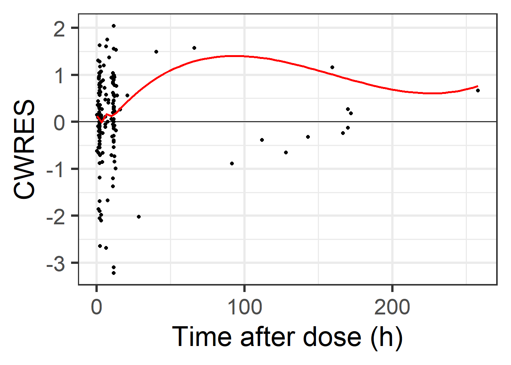
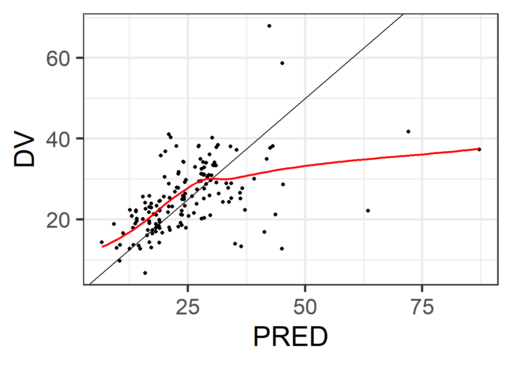
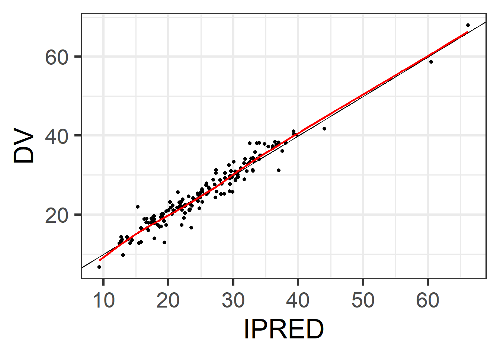
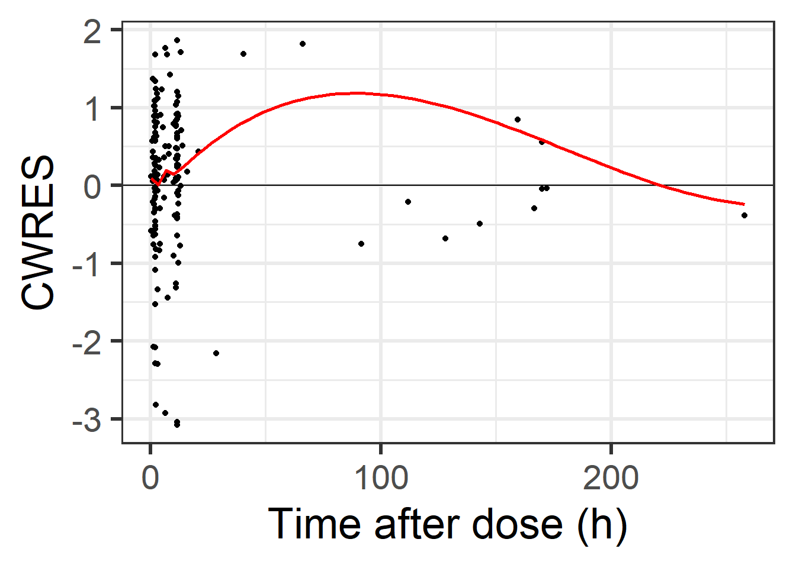

Introduction to covariate modelling
Dagan Lonsdale
Learning objectives
- Explain what a covariate is and give an example of how patient characteristics might influence a pharmacokinetic parameter
- Interpret the results of a covariate analysis and describe what the findings mean for Drug A’s pharmacokinetics in patients with sepsis
- Describe how a population pharmacokinetic model could be used to inform dosing decisions for individual patients or patient groups
Tasks
- Fit a one-compartment IV bolus model for the combined dataset
- Test for covariate effect of weight on volume of distribution
- Test for covariate effect of sepsis on clearance
Extension tasks
- Plot a visual predictive check for
Definition of a covariate
In statistical terms a variable is something that can be quantified in some way - e.g. measured or counted.
A covariate is a variable that changes (varies) with (co) the outcome of interest. In modeling covariates are variables additional to the core predictor variable in the model (e.g. dose) that may be used to help model the outcome variable (e.g. concentration). An example might be that weight would be expected to affect volume of distribution for many drugs and so it might be reasonable to include a weight effect on the volume of distribution parameter in a pharmacokinetic model.
Common types of covariate
Hopefully it will not come as a surprise to you that covariates may be described as:
- Continuous variable
- Taking any possible (real) value (even within a range of values)
- Examples might include serum creatinine, weight or age
- Discrete variable
- Countable numeric
- For example integer values like number of doses
- Categorical variable
- Data that is placed in a number of discrete (uncountable) categories
- There are sub-types of categorical variable that it is useful to know:
- Binary (e.g. sex)
- Ordered (e.g. grade of renal injury 1, 2, 3 with increasing severity)
- Un-ordered (e.g. ethnicity)
Why bother to include covariates in a model?
We have discussed how non-linear mixed-effects models allow us to describe inter-individual differences in pharmacokinetic parameters - these are our \(\eta\) terms.
As an extension of this, it would be nice to try and understand and explain some of this variability so that we can:
- Explain it biologically, rather than just mathematically
- Use this information to make decisions about our drugs
- For example if we find that renal function is linked with clearance of a drug, we might recommend different doses for those with kidney disease
Choosing covariates to include in a model
The choice of what covariates one should include in a model is complex.
Broadly (and briefly) modelers may take an approach to test the effect of all variables in a data set on all parameters in the model. A process of testing each covariate can be automated by programs like and . In such a process, each varibble is tested in turn in a step-wise fashion. If inclusion of a variable provides an improved model fit, it is retained in the model as a covariate and the program then moves on to test the next variable. This is known as step-wise covariate modelling (SCM). This can be a time-consuming (and processor hungry) process.
Alternatively, knowledge about the drug’s pharmacology (prior information) may be used by the modeler to choose specific variables to test as part of the model building process. For example, in the knowledge that a drug is renally excreted, it would be prudent to test the effect of some measure of kidney function (for example serum creatinine or estimated glomerular filtration rate) on drug clearance.
There are some tools that can help us. For example we can plot pharmacokinetic parameters (or \(\eta\)) against potential covariates to look for trends/relationships to then text in our mode.
Assessing whether adding a covariate improves a model’s fit
There are a wealth of diagnostic plots that can be used to think about how well a model fits data from an experiment. We will look at a few key examples.
DV vs PRED and DV vs IPRED
The most straightforward diagnostic plot available is a plot of observations (dependent variable, DV) vs predicted concentrations from a model. There are two subsets of this type of plot. The first, DV vs PRED takes predictions based on population parameters (i.e. excluding \(\eta\)’s) and the second is DV vs IPRED, which bases predictions on individual values for model parameters (including \(\eta\)’s).
Figure 1 shows these diagnostic plots for the furosemide data.
link <- "https://github.com/dlonsdal/SGUL_PK_data/blob/main/frufit.rds?raw=true"
fru.fit <- readRDS(url(link, method="libcurl"))
modfit<-data.frame(fru.fit)
ggplot(modfit,aes(x=PRED,y=DV))+
geom_point()+
theme_bw(base_size=18)+
geom_abline(intercept = 0, slope=1)+
geom_smooth(col='red',se=F)+
xlim(0,1.25)+ylim(0,1.25)
ggplot(modfit,aes(x=IPRED,y=DV))+
geom_point()+
theme_bw(base_size=18)+
geom_abline(intercept = 0, slope=1)+
geom_smooth(col='red',se=F)+
xlim(0,1.25)+ylim(0,1.25)

Figure 1: Basic diagnostic plots for furosemide one-compartment, oral-absorption model fit from Chapter 4
Take a look at Figure 1(a) first. A perfect model fit would have predictions that were identical to the observations from the experiment. All of the points in the scatterplot would fall in a straight line along the line of unity (\(DV=PRED\)). However, as we have discussed previously, real-world data is never perfect, individuals have PK parameters that deviate from the population mean values and there will be un-modelled error. So, what we are really looking for in this plot is a degree of even spread of points above and below the line of unity. Any groups of data points deviating away from this line of unity might make us suspicious that there is some underlying variability not being modelled.
In our example in Figure 1(a) we can see that there is pretty reasonable fit, with even distribution of data points. A red ‘line of best fit’ tracks fairly evenly along the line of unity. This suggests our model fit is pretty good.
Figure 1(b) shows DV vs IPRED. This is individualised predictions, taking into account that random-effect associated with an individual ($). Again, the perfect model fit has all lines along the line of unity. DV vs IPRED plots will generally always look a little better than DV vs PRED plots in this regard. However, it is unusual to get such a tight fit as we see in Figure 1(b) as usually there is additional unexplained variability in data. The example here looks relatively perfect because I simulated these data and I did not simulate complex variability!
Conditionally-weighted residuals
We can look at the idea of residuals from our non-linear mixed-effects models in the same way as we did with our linear models. We can look to see that our residuals remain even across the range of sampling times and observed concentrations.
We are going to introduce a further step, normalising the residuals through a weighting step. This is important because residuals might be influenced by the magnitude of the observation (e.g. you might find a greater range of residuals around \(C_{max}\) compared to around \(C_{min}\)). Weighting the residuals in order to standardise them makes it easier to think about what is happening with model predictions across the full range of observations. We will use conditionally weighted residuals (CWRES), which are a fairly standard form of residual. You don’t need to know exactly how these are created, unless you decide to pursue modelling as a career of course……
Additionally, this leads to a situation where the conditionally weighted residuals (CWRES) should follow an approximately normal distribution with mean zero and variance 1.\[CWRES\sim N(0,1)\] This is helpful because we can expect 99.7% of data points to fall within \(+/- 3\). We can look for trends in this kind of plot to help with our model building process.
nlmixr2 will output CWRES through an additional tableControl() command.
one.cmt <- function() {
ini({
tcl <- log(0.01)
tv <- log(1)
eta.cl ~ 0.1
eta.v ~ 0.1
add.sd <- 0.1
})
model({
cl <- exp(tcl + eta.cl)
v <- exp(tv + eta.v)
linCmt() ~ add(add.sd)
})
}
drugxsim<-read_csv("https://raw.githubusercontent.com/dlonsdal/SGUL_PK_data/main/drugxsim.csv")
drugxfit<-nlmixr2(one.cmt,drugxsim,est="saem",
list(print=0),
table = tableControl(cwres = TRUE))## [====|====|====|====|====|====|====|====|====|====] 0:00:00modfit<-data.frame(drugxfit)ggplot(modfit,aes(x=tad,y=CWRES))+
geom_point()+
theme_bw(base_size=9)+
xlab('Time after dose (h)')+
geom_abline(intercept = 0, slope=0)+
geom_smooth(col='red',se=F)+
ylim(-3,3)
Figure 2: Conditionally weighted residuals plotted against time from dose
You can see from Figure 2 that we are lacking in a uniform distribution of CWRES across sampling times. In fact, this U-shape that is seen in the CWRES plot can be indicative of the need for an additional compartment in the model.
The Objective Function Value (OFV)
Objective function value is measure of model fit. I do not propose that you learn in-depth how it is calculated or what its mathematics are.
What is important for you to note is that the objective function can be used to compare two models. In general, a lower objective function value indicates a superior model fit.
Phenobarbital data
Let’s dive straight in to some practical work and look at the phenobarbital data that comes with the package.
These data were published in 1985(!) and come from some clinical data on neonates given the drug, which has been used as a sedative and general anaesthetic (although is less frequently used now). Neonates were given a loading dose IV injection followed by a maintenance 12 hourly IV dose.
For those interested, the reference is:
Grasela and Donn (1985), Neonatal population pharmacokinetics of phenobarbital derived from routine clinical data, Developmental Pharmacology and Therapeutics, 8, 374-383.
How to:
- Explore the data with some summary tables and plots
- Assess potential covariates in the data?
- Fit a one-compartment model to these data and report the pharmacokinetic parameters
- Make some goodness-of-fit plots
pheno<-pheno_sd
head(pheno)## ID TIME AMT WT APGR DV MDV EVID
## 1 1 0.0 25.0 1.4 7 0.0 1 1
## 2 1 2.0 0.0 1.4 7 17.3 0 0
## 3 1 12.5 3.5 1.4 7 0.0 1 1
## 4 1 24.5 3.5 1.4 7 0.0 1 1
## 5 1 37.0 3.5 1.4 7 0.0 1 1
## 6 1 48.0 3.5 1.4 7 0.0 1 1summary(pheno)## ID TIME AMT WT
## Min. : 1.00 Min. : 0.00 Min. : 0.000 Min. :0.60
## 1st Qu.:13.00 1st Qu.: 19.23 1st Qu.: 2.300 1st Qu.:1.10
## Median :25.00 Median : 59.30 Median : 3.000 Median :1.30
## Mean :28.24 Mean : 63.70 Mean : 5.281 Mean :1.49
## 3rd Qu.:44.00 3rd Qu.: 96.42 3rd Qu.: 4.400 3rd Qu.:1.70
## Max. :59.00 Max. :389.80 Max. :70.000 Max. :3.60
## APGR DV MDV EVID
## Min. : 1.000 Min. : 0.000 Min. :0.0000 Min. :0.0000
## 1st Qu.: 5.000 1st Qu.: 0.000 1st Qu.:1.0000 1st Qu.:1.0000
## Median : 7.000 Median : 0.000 Median :1.0000 Median :1.0000
## Mean : 6.394 Mean : 5.328 Mean :0.7917 Mean :0.7917
## 3rd Qu.: 8.000 3rd Qu.: 0.000 3rd Qu.:1.0000 3rd Qu.:1.0000
## Max. :10.000 Max. :67.900 Max. :1.0000 Max. :1.0000OK, so we can see we’ve got an ID variable, WT which is hopefully easy to interpret as weight and APGR which is APGAR score (a measure of how unwell a neonate is when they are born).
The other variables are hopefully recognisable as default variables.
Let’s see if we can have a little more of a sophisticated summary.
pheno %>%
group_by(ID) %>%
slice(1) %>%
ungroup() %>%
select("WT", "APGR") %>%
tbl_summary() %>%
as_kable_extra(booktabs=TRUE, caption="Summary of weight and APGR characteristics")%>%
kable_styling(latex_options =c("striped"))| Characteristic | N = 59 |
|---|---|
| WT | 1.30 (1.10, 1.70) |
| APGR | 7 (5, 8) |
| 1 Median (Q1, Q3) |
Table 1 provides summary of the two covariates.
pheno$ID<-as.factor(pheno$ID)
ggplot(subset(pheno,EVID==0), aes(x=TIME, y=DV))+
geom_point(size=0.5)+
theme_bw(base_size=9)
Figure 3: Final phenobarbital concentration-time plots
one.cmt <- function() {
ini({
tcl <- log(0.01)
tv <- log(1)
eta.cl ~ 0.1
eta.v ~ 0.1
add.sd <- 0.1
})
model({
cl <- exp(tcl + eta.cl)
v <- exp(tv + eta.v)
linCmt() ~ add(add.sd)
})
}
#nlmixr2(one.cmt)
run1<-nlmixr2(one.cmt,pheno,est="saem",
list(print=0),table = tableControl(cwres = TRUE, keep='WT'))| Est. | SE | %RSE | Back-transformed(95%CI) | BSV(CV%) | Shrink(SD)% | |
|---|---|---|---|---|---|---|
| tcl | -5.18 | 0.0884 | 1.71 | 0.00563 (0.00473, 0.0067) | 51.2 | 30.0%= |
| tv | 0.366 | 0.0607 | 16.6 | 1.44 (1.28, 1.62) | 46.9 | 2.90%< |
| add.sd | 2.79 | 2.79 |
| Estimate | |
|---|---|
| eta.cl | 0.48 |
| eta.v | 0.45 |
You can see in Table 3 that there is quite a bit of inter-individual variability.
For completeness, we should plot our diagnostic plots.



Figure 4: Basic diagnostic plots forone-compartment model fit of pheno data
Testing a continuous covariate
We know from our summary statistics that the median weight for individuals in our data set is 1.3 kg, and that this is a set of neonatal data. We should therefore choose 1.3 kg as our reference weight.
pheno$rWT<-log(pheno$WT/mw)
run2.mod <- function() {
ini({
tcl <- log(0.007)
tv <- log(1.4)
tw <- 1
eta.cl ~ 0.1
eta.v ~ 0.1
add.sd <- 0.1
})
model({
cl <- exp(tcl + eta.cl +rWT*tw)
v <- exp(tv + eta.v)
linCmt() ~ add(add.sd)
})
}
#nlmixr2(one.cmt)
run2<-nlmixr2(run2.mod,pheno,est="saem",
list(print=0),table = tableControl(cwres = TRUE))| Est. | SE | %RSE | Back-transformed(95%CI) | BSV(CV%) | Shrink(SD)% | |
|---|---|---|---|---|---|---|
| tcl | -5.14 | 0.0483 | 0.939 | 0.00585 (0.00532, 0.00643) | 18.5 | 47.2%> |
| tv | 0.348 | 0.0555 | 15.9 | 1.42 (1.27, 1.58) | 42.4 | 2.74%< |
| tw | 1.22 | 0.123 | 10.1 | 1.22 (0.974, 1.46) | ||
| add.sd | 2.8 | 2.8 |
| Estimate | |
|---|---|
| eta.cl | 0.18 |
| eta.v | 0.41 |
Compare the parameter estimates from Table 2 & 3 and Table 4 & 5.
Repeat the goodness-of-fit plots.



Figure 5: Basic diagnostic plots forone-compartment model fit of pheno data with weight on clearance as a covariate
The PRED vs DV plot shows improved model fit with run2 (Figure 5 (a)). Although there is still some room for improvement.
Using the Objective Function Value to test for improvement in model fit
If you add one parameter to your model and compare the objective function with and without that parameter, a drop in objective function value >3.84 suggests a statistically significant (p<0.05) improvement in model fit.
Have a look at the objective function for the two model runs.
run1$OBJF
run2$OBJF## [1] 726.5## [1] 673.6With a drop in OFV of 52.9, we can be confident that adding weight as a covariate on clearance significantly improves model fit.
Modelling categorical covariates
Easiest example of modelling a categorical covariate is where you have two categories - a common example of this might be smoking/non-smoking or perhaps takes an enzyme inducer/doesn’t take an enzyme inducer. In a data set, this should be coded with ‘0’ (doesn’t have e.g. non-smoking) or ‘1’.
The model for the covariate may then be (with smoking as an example :\[CL_i=CL_{\theta}(1+ SM\times{\theta_{smoke}}) \] As \(SM\) is smoker (1=yes, 0=no), you can see that for a non-smoker \(CL_i\) = \(CL_{\theta}\) (since \(SM=0\), \(SM\times{\theta_{smoke}} = 0\) for a non-smoker)